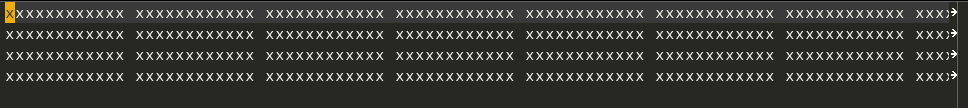

Table of Contents
- 1. 问题
- 2. 调试脚本
- 3. 澄清概念
- 4. 重要概念
- 5. 基本编辑命令
- 6. org-mode
- 7. Timer Example
- 8. Orgmode (Studing)
- 8.1. DONE E01S01 : Headlines & outline mode
- 8.2. DONE E01S02 : ToDo Keywords
- 8.3. DONE E01S03 : Schedule, Deadlines & Agenda views
- 8.4. DONE E01S04 : Repeating tasks
- 8.5. DONE E01S05 : Checklists
[2/4] - 8.6. DONE E02S01 : Tags TAGS ORGMODE
- 8.7. DONE E02S02 : Agenda view (advanced) ORGMODE
- 8.8. DONE E02S03 : Customized Agenda view ORGMODE Advanced
- 8.9. NEXT E02S04 : Drawers,Logging & quick notes ORGMODE
- 8.10. NEXT E02S05 : Archiving.mp4
- 8.11. NEXT E03S01 : Automatic logging of status changes
- 8.12. NEXT E03S02 : Splitting your system up to several files
- 8.13. NEXT E03S03 : The first capture template(s)
- 8.14. NEXT E03S04 : The -PROPERTIES - drawer
- 8.15. NEXT E03S05 : Archiving to different files
- 8.16. NEXT E04S01 : Ordered tasks
- 8.17. NEXT E04S02 : Timers
- 8.18. NEXT E04S03 : Clocking (aka time tracking)
- 8.19. NEXT E04S04 : Column view
- 8.20. NEXT E04S05 : Effort estimates
- 8.21. NEXT E05S01 : Linking (internal)
- 8.22. NEXT E05S02 : Linking (external)
- 8.23. NEXT E05S03 : Attachments
- 8.24. NEXT E05S04 : Priorities
- 8.25. NEXT E05S05 : Tables
- 8.26. NEXT E06S01 : Exporting
- 8.27. NEXT E06S02 : Advanced exporting
- 8.28. NEXT E06S03 : Publishing
- 8.29. NEXT E06S04 : Dynamic blocks
- 8.30. NEXT E06S05 : Tracking habits
- 8.31. NEXT E07S01 : Bulk agenda actions
- 8.32. NEXT E07S02 : Presenting my system
- 8.33. NEXT E07S03 : Google Calendar integration
- 8.34. NEXT E07S04 : Source code in OrgMode
- 8.35. NEXT E07S05 :
- 9. Use Emacs
- 10. Git
1 问题
[-]org 转换为标准 latex 文件[-]org 输出为 html 文件[-]使用 github 样式显示文件[X]在 github 上建立自己的站点[X]默认浏览器改为 qutebrowser[-]安装 emacs 26.1 。主要是 emacs-26-non-common-dfsg.[-]Open org-mode html in EWW.
2 调试脚本
- 单独加载另外一个 emacs 的初始化文件
emacs -q -l ~/youemacs.el emacs --no-initial-file --load-file=~/youemacs.el
- 调试 elisp 语言, , ' ，或是 M-x ielm 。
3 澄清概念
4 重要概念
4.1 屏幕（Screen）
Emacs 的显示区域称为 Frame ， 在 Frame 中可包含多个 Windows。 Emacs 中 Frame 在 IDE 中称为 Windows， 而 Emacs 的 Windows 在 IDE 中称为 View。
4.1.1 Point
称为输入提示符号。通过 Cursor 可以改变输入符号的显示。
4.1.2 Echo Area
显示输入命令的区域。Display Custom 修改 Echo Area。Echo Area 用于显示 Minibuffer。退出 Minibuffer 命令是 C-g。
4.1.3 Mode Line
窗口底部是 Mode Line，显示当前 buffer 状态。Mode Line 文本格式如下
| cs | ch-fr | buf | pos | line | (major | minor) |
以下是详细解释
| cs | Coding System 的缩写。C-h C unix 给出 unix coding 的具体信息。 C-h C uft-8 给出 utf-8 coding 的具体信息。 |
| ch | 表示文件是否保存。 * 表示文件未保存， - 表示文件已保存，% 表示为只读文件。 |
| fr | Frame 缩写。 F1 为第 1 个 Frame，F2 为第 2 个 Frame。 |
| buf | Buffer name，即当前 Buffer 中文件名。 |
| pos | 当前 Buffer 中显示的文件位置。 Top 靠近文件首部， Bot 靠近文件尾部， All 显示了全部文件，nn% 以百分比形式指出显示位置。 |
| line | 18:10 表示 第 18 行第 10 个字符位置。 |
| major | 主编辑模式，如 Text mode，Lisp mode，Latex mode 等。 |
| minor | 次编辑模式，可附加到主编辑模式之后。 |
| recursive edit | […] 表示处于循环编辑模式。 |
4.2 用户输入（User input）
Emacs 主要设计目的是通过键盘与用户交互，当然 Emacs 也使用鼠标，但这不是设计的出发点。 因而要能熟练使用键盘快捷键操作和编辑文件。
4.3 输入键 （Keys）
Key 和其组合键会引发 key event。如果一组 Key 引发一条命令，称为 Complete Key。 如果无法触发命令，称为 Prefix key，如 C-x 和 M-x。
4.4 命令 （Command）
每条命令是一个 Lisp 函数。 将命令与组合键绑定在一起称为 Keymaps。 C-n 之所以能跳到下一行，是因为绑定了函数 next-line。
4.5 进入 Emacs
如果 inhibit-startup-screen 为 non-nil 将不会显示欢迎界面，而直接进入到 scratch 文件，在其中能运行一些待测试的 Lisp 程序。
如果希望启动 Emacs 时，进入到某个目录或是打开特定文件，可配置 initial-buffer-choice 。
4.6 退出 Emacs
C-x C-x 退出 Emacs (save-buffers-kill-terminal) C-z Emacs 最小化 (suspend-frame) M-x kill-emacs 退出 Emacs，不需要任何提示
Emacs 能在退出时保存当前会话 Session，下次启动后可先加载此会话。
5 基本编辑命令
5.1 基础
5.1.1 插入文本 (Insert Text)
C-j [O] 插入新的空行，新行没有 auto-indent 。 在 Minor Mode 中， 可以改变插入方式。 例如， Auto Fill Mode 可自动截取超出长度的文本(参见 Filling)。
如要插入非图形化字符，先输入 C-q (quoted-insert)
- 输入 DEL 。
C-q后，紧接着输入 <DEL>。 - 输入 Unicode。
C-q 1 0 1 B显示 AB。
read-quoted-char-radix 控制基数，如果为 10 表示十进制，如果为 16 表示十六进制。
Unicode 字符还可以通过 C-x 8 命令插入， C-x 8 C-h 查看具体插入 Unicode 字符的命令。 例如， C-x 8 $ 插入字符 ¤ 。
或者 C-x 8 <RET> 会列出所有 Unicode 可用字符。 例如，输入 lambda ，找到对应命令 Greek Small Letter Lambda 就能插入 λ 。
5.1.2 移动光标 (Move Point)
我使用 Evil-mode 所以不太用这些操作。
5.1.3 删除 (Erasing)
| Emacs | Function | Evil |
|---|---|---|
| <DEL> | delete-forward-char | x |
| <BACKSPACE> | delete-backward-char | X |
C-d |
delete-char | x |
C-k |
kill-line | dd |
M-d |
kill-word | D |
5.1.4 基本撤销 (Basic Undo)
| Emacs | Function | Evil |
C-x u |
undo | u |
M-x _ |
redo |
5.1.5 文件 (Files)
| Emacs | Function | Evil |
C-x C-f |
find-file | |
C-x C-s |
save-buffer |
5.1.6 帮助 (Help)
简单，直接 C-h 即可。
5.1.7 空行 (Blank Lines)
| Emacs | Function | Evil |
C-x C-o |
delete-blank-lines | 类似 J |
C-o |
open-line | o |
5.1.8 连续行 (Continuation Lines)
:ID: 0500a5b8-4fdb-4b52-9beb-472db7ab2bda
在新版 org-mode (>9.0) 中， 不再使用 <s tab 插入代码。Easy template 换为了 C-c C-, 。
在 org-mode 中，插入按键顺序的命令 SPC m i k 。

Figure 1: 使用 SPC t l 启用 line truncation
5.1.9 位置信息 (Position Info)
5.1.10 参数 (Arguments)
5.1.11 重复 (Repeating)
5.2 Minibuffer
5.3 M-x
5.4 帮助(help)
6 org-mode
6.1 Agenda Views
Todo items 、 time-stamped items 和 tagged headlines 可能分布在不同的文件中。 有时为了能将这些信息搜集、整理并按照要求提取信息，在特定 buffer 中显示，这种 方式称为 Agenda。
6.1.1 Agenda Files
org-agenda-files 存放 agenda 文件指定位置，通常是配置为目录，该目录下所
有 .org 文件都是 agenda 文件。 如果只有一个 agenda 文件就必须明确给出文件名。
(setq org-agenda-files (list "~/gitdown/MyThrougth/mytime.org"))
因此 agenda 是由一组 org 文件构成的，依次读取每个文件内容，搜集文件信息。 比较便捷的方式是直接用命令 C-c [ 把当前文件 添加到 agenda 中 ， C-c ] 已修改为在当前文件 中插入 Bibtex 引用。因此，要使用 org-remove-file 命令直接从 agenda 文件中 移除当前 org 文件。 C-c , 循环访问 agenda 文件。
6.2 Document Structure
6.2.1 Headlines
| local visible cycling | <tab> |
| global visible cycling | <backtab> |
| move up/down | <M-up> / <M-down> |
6.4 Datetimes
ToDo items 可以标记 date 和 time， 在 org 中称之为 timestamp。
6.4.1 Timestamps
时间戳分类
6.4.2 创建时间戳
| C-c . | 插入日期/连续日期 |
| C-c ! | 插入非激活日期 |
| C-c < | 插入当前日期 |
| C-c C-o | 列出光标下日期/日期范围中的 agenda |
| <S-right> <S-left> | 调整月份 |
| <S-up> <S-down> | 调整天数 |
| C-c C-y | 计算有多少天 |
6.4.3 Deadlines 和 Scheduling
时间戳可配置特殊关键字帮助进行计划，例如 Deadlines 和 Scheduling。
使用 C-c / 会出现 sparse tree。
- DEADLINE
所有 DEADLINE 日期之前计划的事件都会显示在 agenda 中，
org-deadline-warning-days指定 DEADLINE 日期之前几天发出警告，直到将事 件标志为 DONE 才会停止提示警告。- DONE 完成课程教案编写工作
DEADLINE:<2019-11-30 Sat> 第一次编辑:[[bbdb:Ford Prefect]]
使用
-2d表示提前 2 天发出警告提示。 - TODO 与张总见面约谈
DEADLINE:<2019-11-30 Sat -2d>
重复某个 Deadlines，使用
+1m表示每月重复一次，~-2d~ 表示提前 2 天提示。 当本月任务完成后，再次使用 C-c C-t 不但能 标记本月任务已经完成，而且还能启用下月任务。 凡是标记为 DONE 的任务不再 出现在 agenda 中。 - DONE 交房租
DEADLINE: <2019-08-15 Thu +1m -2d> :PROPERTIES: :LAST_REPEAT: [2019-11-28 Thu 15:27] :END:
- DONE 与 Scott 老师视频通话
SCHEDULED: <2019-10-25 Fri ++1w> :PROPERTIES: :LAST_REPEAT: [2019-11-28 Thu 15:26] :END:
- DONE 完成课程教案编写工作
- SCHEDULED
计划何时开始某项新任务。如果延迟两天才开始该任务，则显示为
2x。如果计 划推迟 3 天，则在时间上使用-3d表示。SCHEDULED 经常会被误解。 例如，与某人约会是 appointment，使用简单的计划即 可。 一旦使用 SCHEDULED , 则表示在该任务在指定日期才会在时间线中出现。
7 Timer Example
7.1 Clocking 命令
| Clocking in | C-c C-x C-i |
| Clocking out | C-c C-x C-o |
| Restart a clock | C-c C-x C-x |
| Jump to Clocked task | C-c C-x C-j |
| Cancel a Clock in | C-c C-x C-q |
| Show times | C-c C-x C-d |
| Recompute time | C-c C-c |
| Start countdown timer | C-c C-x ; |
| Pause a timer or continue | C-c C-x , |
| Insert current timer | C-c C-x . |
| Start a relative timer | C-c C-x 0 |
| Calc & display spended time | C-c C-x C-d |
| Enter Column view | C-c C-x C-c |
| Leave column view | Q |
7.2 Relative timer example
Football notes
You'll start relative timer by C-c C-x 0 . The timer will be tick from 00:00:01, 00:00:02, … , 00:01:08, ….
Suppose team A get a score at sometimes, press C-c C-x . to get current relative time and insert below current cursor.
- 0:04:31
- Team A scored a goal 1:0 .
- 0:05:26
- [When press O to get a newline, insert current timer automatically.] Team B scored a goal 1:1.
[If you go out to get a dink, you could press C-c C-x , to pause timer. Repeat such combination keys when coming back from outside.]
- Stop timer by C-c C-x _
7.3 Clock Tracking example
7.3.1 Task A
- Some task that we need to know how much time it take.
Use C-c C-x TAB to insert timestamp, Use C-c C-x C-j to jump to the last insert timestamp，Use C-c C-x C-o to close timestamp.
7.3.2 Task B
- Some other task to clock.
Use C-c C-c to recompute timer. Use C-c C-x C-d to calculate spended time. Use C-c C-c to cancel display total spended time.
7.4 Clock column view example
#+COLUMNS: %7TODO(To Do) %40ITEM(TASK) %TAGS(Tags) %6CLOCKSUM(Clock)
| Enter Column view | C-c C-x C-c |
| Leave column view | Q |
7.5 Effort estimate example
Goal: Estimate the effort that your task will take.
Recipe: Effort are properties stored in :Effort: . Easy setup: Define
#+PROPERTIES: Effort_ALL .
Add #+COLUMNS: %8Effort(Effort){:} in column view. {:} means sum up times.
| Show column view | C-c C-x C-c |
| increase effort | <S-right> |
| decrease effort | <S-left> |
| Leave column view | Q |
8 Orgmode (Studing)
8.1 DONE E01S01 : Headlines & outline mode
| Local expand/collapse cycle | <tab> |
| Global expand/collapse cycle | <backtab> |
| Increase level | <alt-right> |
| Decrease level | <alt-left> |
| Move up | <M-up> |
| Move down | <M-down> |
8.2 DONE E01S02 : ToDo Keywords
More keywords by define #+SEQ_TODO: .
Item of left | are TODO items (red).
Item of right | are DONE items (green).
| Cycle through them | <S-right> |
| Active local setup line with | C-c C-c |
| Get a menu of all keywords | C-c C-t |
8.3 DONE E01S03 : Schedule, Deadlines & Agenda views
| Schedule done | C-c C-s |
| Deadlines defined | C-c C-d |
| Agenda switch | C-a a |
| Follow mode | S-f |
| Move forward | f |
| Move backward | b |
8.4 DONE E01S04 : Repeating tasks
| regular every week (d=day w=weak m=month y=year) | +1w |
| repeat every week, definitely in the future | ++1w |
| Next 4 week after the task is DONE | .+4w |
If repeated event was setting by SCHEDULED C-c C-t , you could press C-c C-t again to change current SCHEDULED event to state DONE and restart a new SCHEDULED event.
8.4.1 规律重复出现的时间戳
如每天下午 5 点跑步，每周六去公园玩，每年的生日等。 d 表示 day， w 表示 week ， m 表示 month。
8.5 DONE E01S05 : Checklists [2/4]
[ ]This is checklist[ ]New checklist by <M-S-return>[X]You can see the completion of the checklist with[0/0]or[0%]on headlines.[X]Checkbox toggled with C-c C-c
8.6 DONE E02S01 : Tags TAGS ORGMODE
Tags can be added to headlines and are often used as a way to mark GTD contexts.
Tags can be predefined with a line #+TAGS:PHONE(o) ... at the beginning of
the file. Use C-c C-q to assign a tags for a
headline. Use <tab> to enter new tags instead
of predefined tags. Clear tags by SPC .
8.7 DONE E02S02 : Agenda view (advanced) ORGMODE
| Timeline for current buffer | L |
| List all TODO entries | t |
| Entries with a special TODO Keywords | T |
| Match tags/propoerties/TODO keywords | M |
| Like before, but only TODO keywords | M |
| Search for keywords | s |
8.8 DONE E02S03 : Customized Agenda view ORGMODE Advanced
for customizing agenda command
8.9 NEXT E02S04 : Drawers,Logging & quick notes ORGMODE
- Note taken on
test quick notes
I want to add quick notes. If you want :LOGBOOK: appeared in the body, you
must customize org-log-into-drawer.
We could create DRAWER by C-c C-x d .
- This is the usually hidden content of drawer
- The drawer ends with the line that says :END:
- Reserved drawer names are e.g. :LOGBOOK: or :PROPERTIES:
:LOGBOOK: don't display in the ouput html files!?
This is the source orgfiles
:LOGBOOK: - Note taken on [2020-02-12 Wed 10:25] \\ After customize ~org-log-into-drawer~, I could get quick notes into body. - Note taken on [2020-02-12 Wed 10:09] \\ This is a quick notes using @@html:<kbd>@@ C-c C-z @@html:</kbd>@@ . That's good! :END:
8.10 NEXT E02S05 : Archiving.mp4
8.11 NEXT E03S01 : Automatic logging of status changes
8.12 NEXT E03S02 : Splitting your system up to several files
8.13 NEXT E03S03 : The first capture template(s)
8.14 NEXT E03S04 : The -PROPERTIES - drawer
8.15 NEXT E03S05 : Archiving to different files
8.16 NEXT E04S01 : Ordered tasks
8.17 NEXT E04S02 : Timers
8.18 NEXT E04S03 : Clocking (aka time tracking)
8.19 NEXT E04S04 : Column view
8.20 NEXT E04S05 : Effort estimates
8.21 NEXT E05S01 : Linking (internal)
8.22 NEXT E05S02 : Linking (external)
8.23 NEXT E05S03 : Attachments
8.24 NEXT E05S04 : Priorities
8.25 NEXT E05S05 : Tables
8.26 NEXT E06S01 : Exporting
8.27 NEXT E06S02 : Advanced exporting
8.28 NEXT E06S03 : Publishing
8.29 NEXT E06S04 : Dynamic blocks
8.30 NEXT E06S05 : Tracking habits
8.31 NEXT E07S01 : Bulk agenda actions
8.32 NEXT E07S02 : Presenting my system
8.33 NEXT E07S03 : Google Calendar integration
8.34 NEXT E07S04 : Source code in OrgMode
8.35 NEXT E07S05 :
9 Use Emacs
9.1 TODO 62 : Magit
I must learn git before using Magit.
10 Git
10.1 Git Basic
10.1.1 in master
git initgit config --global user.name 'AiPick'git config --global user.emal '2585957571@qq.com'git add *.*all files NOT including subdirgit add .add all file include subdirgit statusgit rm --cached [uncached filename]git commit -m "add readme.txt"touch .gitignoreignore these files
10.1.2 switch to branch
git branch mybranchgit checkout mybranchtouch branch.txtgit add .git commit -m "branch changed"
10.1.3 switch back to master and merge
git chechout mastergit merge mybranch
10.1.4 git to remote
git remote add origin https://github.com/AiPick/notes.gitgit remotegit push -u origin masterinput username & password- refresh github pages to get pushed files and dirs
touch newtest.txtgit add .git commit -m "test with newtest.txt which pushed to remote"git pushbefore refresh github pages to getnewtest.txtappeared in remote repo.
10.1.5 get newest repo
git pull
10.2 magit
- SPC g s magit status
- committed file s
- committed to repo c
- use , , to actually commit changed files.
- use p to push local repo to remote repo.
- use F to pull from remote repo.
- use e to solve conflict in Ediff. use N & P to navigate between the Ediff. use A & B to choice what you want to reserve code.
- SPC g b is blame state to show different author comment and revised code on the timeline. You could press b to backtrace in the history.
- use f to fetch repo files.